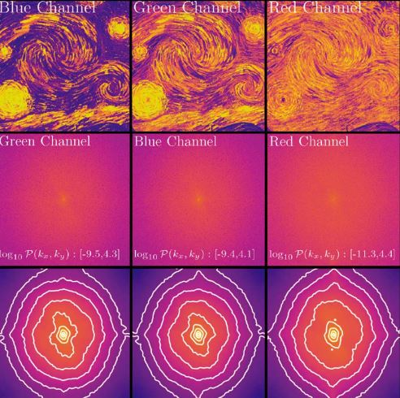

¿Sabías que Van Gogh plasmó en sus obras un principio de la física antes de que sea descubierto? Así es: cincuenta años antes de que los científicos explicaran el fenómeno de la turbulencia, el prodigioso pintor lo descubrió por sus propios medios.
Este término reconocido por la física se refiere a la forma en la que los fluidos, como el agua o el aire, se mueven de maneras impredecibles formando remolinos de distintas escalas.
La pintura de Van Gogh lleva exactamente estas características en sus paisajes. Su arte fue estudiado por los científicos, quienes comprobaron, gracias a un análisis detallado, que los movimientos y las leyes matemáticas de la fractalidad se encontraban perfectamente reflejadas allí.
La NASA fue la primera en descubrir la similitud de los descubrimientos intergalácticos con las obras de Vincent Van Gogh. Luego, otros científicos encontraron nuevos fenómenos de la física y la ciencia como el “escalamiento” y la “cascada” en su pintura. Van Gogh era un observador innato, por lo que podía comprender la naturaleza con una profundidad única, que luego compartía en sus cuadros. Sin embargo, durante su vida su talento fue incomprendido y pudo vender un sólo cuadro, y su fama llegó mucho tiempo después.
Al reconocernos como seres de la naturaleza, podemos entender y percibir mucho más de lo que se ve a simple vista, tanto de lo externo como de lo interno. Porque entendemos desde otro lugar, y no con la cabeza. Algo que la ciencia encuentra muy difícil de medir y explicar es cómo un pintor con su ojo y talento pudo manifestar sencillamente, y con una increíble precisión matemática, sin siquiera proponérselo.
Si todxs somos parte de lo mismo, también nosotrxs llevamos la información dentro nuestro. Lo que pasa es que con la sobreinformación que recibimos de afuera, nos olvidamos de nuestra principal y verdadera fuente de conocimiento. En la época de Van Gogh, él no tenía a quien preguntar sobre lo que veía, pero su conexión con el entorno lo llevó a convertirse en un gran pintor y un gran científico.